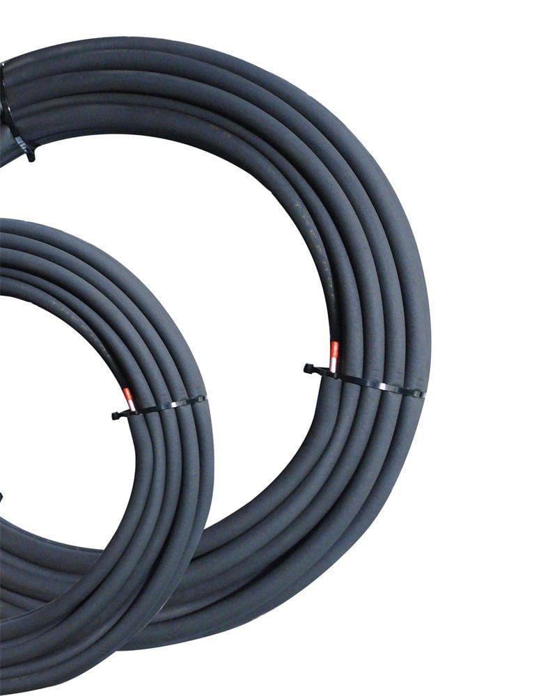
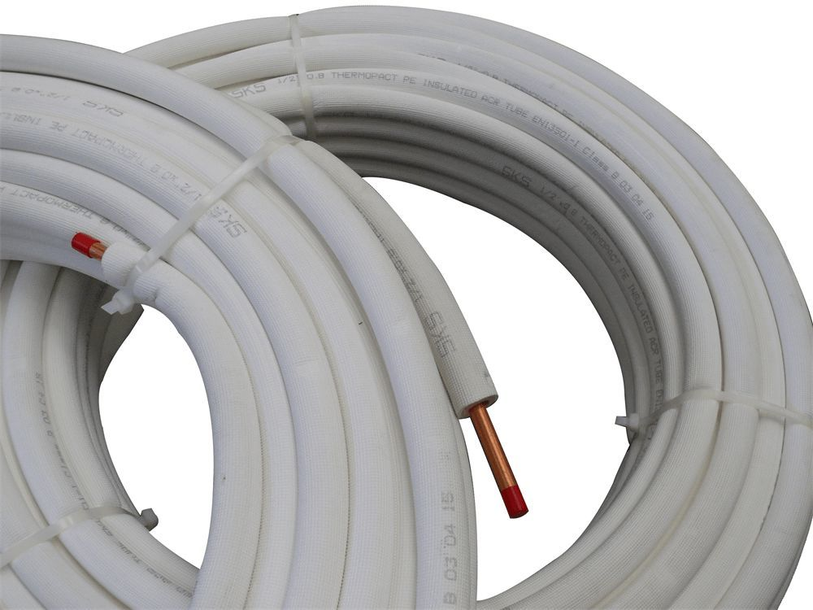

☎ 0216 344 48 19
Klimasun, 47 ürünle Sarkuysan markasının endüstriyel iklimlendirme çözümlerini sunar. Borular & Bağlantı Elemanları kategorilerinde orijinal tedarik ve Avrupa'dan sipariş imkanı.






Evet. Klimasun Sarkuysan ürünlerini ve yedek parçalarını orijinal olarak tedarik eder; kataloğumuzda 47 Sarkuysan ürünü listelidir.
Evet, tüm ürünler orijinaldir. Stokta olmayanlar Almanya ve İtalya'dan sipariş üzerine temin edilir.
Ürünü teklif sepetine ekleyip WhatsApp (0532 424 6219) veya e-posta ile iletin; hızlıca kurumsal teklif alırsınız.